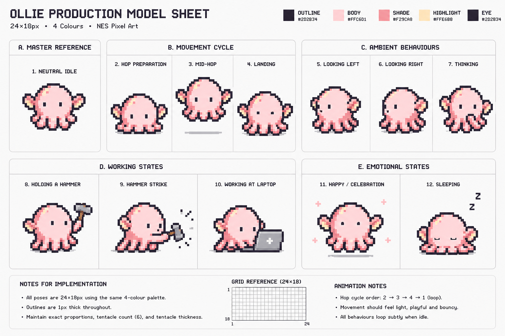

Approved reference

Approved reference and role-grid SVG, followed by exact-width size checks.
Production pose checkpoint
Composition follows references 5, 6, 7, 8, 9, 10, and 12. Palette and pixel treatment follow the existing production Ollie asset.

Live production behavior
This uses the production controller with shortened preview-only idle delays. Look poses rotate automatically; laptop and hammer work alternate.
Current production pose: idle
Edge footprint check: running…